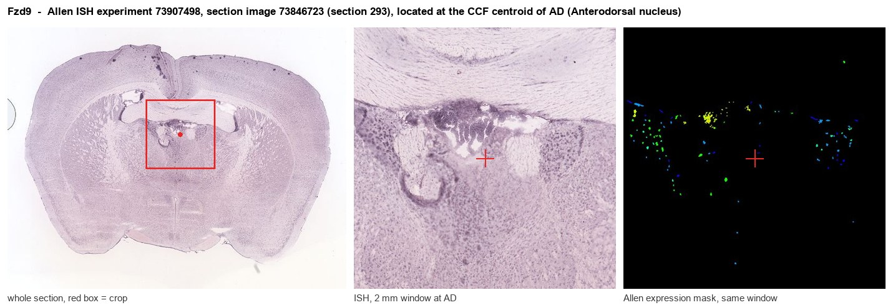
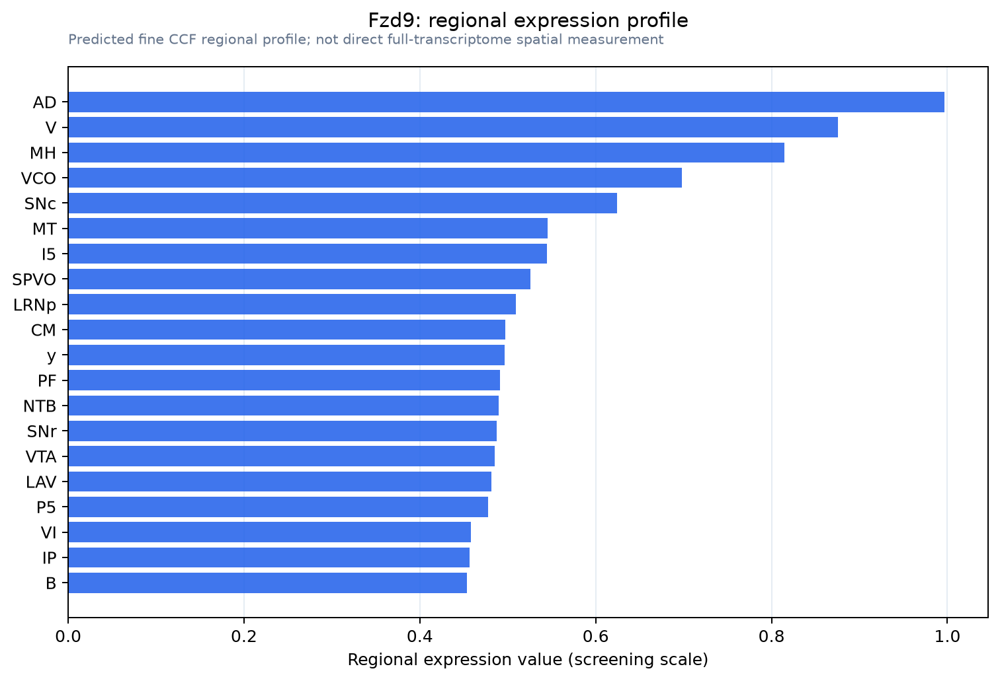

Fzd9
Frizzled-9 (Fz-9) (mFz3) (mFz9) (CD antigen CD349)
Spatial tier: RESTRICTED · Class: GPCR · Top region: AD (Anterodorsal nucleus) · Positive regions: 25/554
43.2Discovery Score
37.2Targetability Score
CEvidence grade C
What this means: Fzd9: fine CCF profile is restricted toward AD (top regions: AD, V, MH, VCO, SNc; 25 positive regions); direct spatial validation is still required.
Function in AD: evidence, prediction, innovation
- Gene function
- Fzd9 encodes Frizzled-9, a seven-transmembrane Wnt receptor. It is activated by Wnt-2 and signals through the canonical Wnt/beta-catenin pathway, and also influences cytoskeletal dynamics and receptor clustering. In humans it lies within the Williams syndrome deletion interval on chromosome 7q11.23.
- Region function
- The anterodorsal thalamic nucleus relays vestibular head-direction information to postsubiculum and entorhinal cortex and is required for stable spatial orientation and normal hippocampal-dependent spatial memory.
- Published in this region
- inferred No region-specific literature found. Frizzled-9 is described as selectively expressed in hippocampus, where null mice show increased dentate gyrus apoptosis, fewer granule cells, lowered seizure thresholds and severe visuospatial learning deficits (Zhao et al. 2005); its canonical activation by Wnt-2 was shown by Karasawa et al. 2002.
- Predicted function
- Prediction: in AD, Frizzled-9 would most plausibly act developmentally, setting thalamic neuron survival and anterior-thalamic axon targeting to postsubiculum and entorhinal cortex via Wnt/beta-catenin, as it does in dentate gyrus. Thalamus-restricted deletion should give a smaller AD with mistargeted projections and a spatial-orientation deficit dissociable from hippocampal pathology. Fzd9 haploinsufficiency also contributes to the Williams syndrome visuospatial phenotype.
- Innovation
- ★★★★☆ 4/5 Fzd9 work has focused almost entirely on hippocampus, leaving a plausible and clinically relevant thalamic head-direction role unexamined.
- Tools
- Fzd9 null mice (Zhao et al. 2005); Wnt-2 ligand and modulators XAV939 and CHIR99021; anti-FZD9 antibodies; thalamic targeting via Gbx2-CreER or Rorb/Calb2 drivers with AAV.
- References
Direct evidence located at the region

Allen ISH experiment 73907498, section image 73846723 (section 293): the section that contains the CCF centroid of Anterodorsal nucleus according to the Allen image-to-atlas alignment (reference_to_image), with a 2 mm window around that point. Left: whole section, red box = window. Middle: ISH signal. Right: Allen's expression-mask view of the same window. open this image in the Allen viewer
Look it up yourself: Allen Mouse Brain ISH for Fzd9Allen reference atlas: AD (structure 64)ABC Atlas MERFISH viewer(in the ABC Atlas choose dataset MERFISH-C57BL6J-638850-CCF, colour cells by gene "Fzd9" or by parcellation_substructure "AD")All genes confined to AD + 3-D brain
Direct spatial evidence
MERFISH REGION LOCATOR

Regional expression figure

Predicted WMB × fine-CCF profile; not direct full-transcriptome spatial measurement.
Spatial profile
Evidence and specificity
- Evidence status
- PREDICTED_FINE
- Direct sources
- None; predicted localization only
- Exclusive threshold
- 12 positive regions out of 554
- Spatial specificity
- 0.293
- Top-region fraction
- 0.056
- Filter status
- PASS
Interpretation limits
- Cell-type-to-region projection is imputed expression, not direct spatial measurement.
- Adult reference atlases do not establish stability across age, sex, strain, state, or disease.
- Transcript abundance does not guarantee protein abundance or genetic-tool performance.